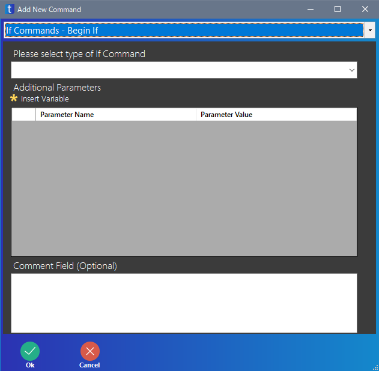

Begin If
条件を指定し、条件が成り立つかどうかの結果に応じて行う命令を変更します。
Begin If 命令の場合、条件が成り立った場合の命令を、Begin If 命令の下に入力します。

| 項目 | 意味 |
|---|---|
| Please select type of If Command | Begin If で判定する条件の種類を指定します |
| Additional Parameters | 条件の内容を入力します Please select type of If Command で指定した種類に応じて変化します 書く項目の詳細はこちらを見てください |
| Comment Field (Optional) | コメントを入力します 入力しなくても良いです |
Please select type of If Command
Please select type of If Command は下の表のような条件が選べます。
| 項目 | 意味 |
|---|---|
| Value | 2 つの値や変数について比較します 数字の比較に関係する条件が選べます |
| Date Compare | 2 つの日付や日付が代入された変数についての比較します |
| Variable Compare | 2 つの値や変数について比較します 文字列の比較に関係する条件が選べます |
| Variable Has Value | 変数に値が代入されたかどうかを判定します |
| Variable Is Numeric | 変数に代入された値が数字かどうかを判定します |
| Window Name Exists | 指定したウィンドウの名前が存在するかを判定します |
| Active Window Name Is | 現在アクティブになっているウィンドウの名前を判定します |
| File Exists | 指定したファイルが存在するかを判定します |
| Folder Exists | 指定したフォルダーが存在するかを判定します |
| Web Element Exists | ブラウザーに指定した要素が存在するかを判定します |
| GUI Element Exists | ソフトの画面上に指定した要素が存在するかを判定します |
| Error Occured | 指定した行の命令でエラーが発生したかを判定します |
| Error Did Not Occur | 指定した行の命令でエラーが発生していないことを判定します |
Value
Value は 2 つの数字の関係を判定するときに使います。
| 項目 | 意味 |
|---|---|
| Value1 | 値を比較したい数字、または変数を入力します 変数を指定するときは、変数を意味する囲いで囲んでください |
| Operand | 比較方法を選択します |
| Value2 | 値を比較したい数字、または変数を入力します 変数を指定するときは、変数を意味する囲いで囲んでください |
Operand の各項目の意味は下の表のとおりです。
| 項目 | 意味 |
|---|---|
| is equal to | Value1 と Value2 が等しいか Value1 == Value2 |
| is greater than | Value1 が Value2 より大きいか Value1 > Value2 |
| is greater than or equal to | Value1 が Value2 以上か Value1 >= Value2 |
| is less than | Value1 が Value2 未満か Value1 < Value2 |
| is less than or equal to | Value1 が Value2 以下か Value1 <= Value2 |
| is not equal to | Value1 と Value2 が等しくないか Value1 != Value2 |
Date Compare
Date Compare は 2 つの日付を比較するときに使います。
| 項目 | 意味 |
|---|---|
| Value1 | 比較したい日にち、または変数を入力します 変数を指定するときは、変数を意味する囲いで囲んでください |
| Operand | 比較方法を選択します |
| Value2 | 比較したい日にち、または変数を入力します 変数を指定するときは、変数を意味する囲いで囲んでください |
Operand の各項目の意味は下の表のとおりです。
| 項目 | 意味 |
|---|---|
| is equal to | Value1 と Value2 が同じ日にちか Value1 == Value2 |
| is greater than | Value1 が Value2 より未来か Value1 > Value2 |
| is greater than or equal to | Value1 が Value2 と同じ日にち、もしくは未来か Value1 >= Value2 |
| is less than | Value1 が Value2 より過去か Value1 < Value2 |
| is less than or equal to | Value1 が Value2 と同じ日にち、もしくは過去か Value1 <= Value2 |
| is not equal to | Value1 と Value2 が異なる日にちか Value1 != Value2 |
Variable Compare
Variable Compare は 2 つの文字列を比較するときに使います。
| 項目 | 意味 |
|---|---|
| Value1 | 比較したい文字列、または変数を入力します 変数を指定するときは、変数を意味する囲いで囲んでください |
| Operand | 比較方法を選択します |
| Value2 | 比較したい文字列、または変数を入力します 変数を指定するときは、変数を意味する囲いで囲んでください |
| Case Sensitive | 大文字・小文字を区別するかを決めます No ならば大文字・小文字を区別しません Yes ならば大文字・小文字を区別します |
Operand の各項目の意味は下の表のとおりです。
| 項目 | 意味 |
|---|---|
| contains | Value1 に Value2 で指定した文字列が含まれているか |
| does not contain | Value1 に Value2 で指定した文字列が含まれていないか |
| is equal to | Value1 と Value2 が等しいか Value1 == Value2 |
| is not equal to | Value1 と Value2 が等しくないか Value1 != Value2 |
Operand に contain を指定した場合、Value1 が「abc123cde」で、Value2 が「cd」の場合、条件は成り立ちます。
Operand に does not contain を指定した場合、Value1 が「abc123cde」で、Value2 が「cd」の場合、条件は成り立ちません。
Operand が is equal to で、Value1 が「abc」、Value2 が「ABC」の場合、Case Sensitive の値により結果が変化します。Case Sensitive が No ならば大文字・小文字を区別しないので、条件は成り立ちます。
Case Sensitive が Yes ならば、大文字・小文字を区別するので、条件は成り立ちません。
Variable Has Value
Variable Has Value は変数に値が代入されているかを判定するときに使います。
| 項目 | 意味 |
|---|---|
| Variable Name | 調べたい変数名を入力します 変数名を意味する囲いで囲まなくても良いです |
Variable Has Value で、値が代入されていないと判定されるのは、以下のとおりです。
- Variable Manager で初期値が指定されていない変数
- New Variable 命令で初期値が指定されていない変数
- Set Variable 命令で値を代入していない変数
Variable Is Numeric
Variable Is Numeric は、変数に代入されている値が数字かを判定します。
| 項目 | 意味 |
|---|---|
| Variable Name | 調べたい変数名を入力します 変数名を意味囲いで囲まなくても良いです |
Variable Is Numeric で数字と判定されるのは、以下のような値です。
- 「123」のような整数
- 「1.23」のような小数を含む数
- 「0123」のような表記の数 (プログラミング言語のように 8 進数として扱われません)
Variable Is Numeric で数字と判定されないのは、以下のような値です。
- 「"123"」のような " で囲まれた数
- 「'123'」のような ' で囲まれた数
- 「0x123」や「0X123」のような 16 進数表記のような数
Window Name Exists
Window Name Exists は、現在パソコンで指定した名前の動いているソフトが動いているかを判定します。
Active Window Name Is
Active Window Name Is は現在、手前にあるソフトの名前を判定します。
File Exists
File Exists は指定したファイルが存在するかを判定します。
Folder Exists
Folder Exists は指定したフォルダーが存在するかを判定します。
Web Element Exists
Web Element Exists はブラウザーに指定した要素が存在するかを判定します。
GUI Element Exists
GUI Element Exists はソフトに指定した要素が存在するかを判定します。

バージョン 3.5.0.0 時点では、Window Name を「Current Window」にしても、現在のウィンドウの意味にはなりません。おそらくバグなのでしょうが、「Current Window」という名前のウィンドウが存在するかどうかをチェックしてしまいます。
そのため、ウィンドウ名を変数にしたり、ウィンドウ名を入力するなど工夫が必要です。
Error Occured
Error Occured は指定した行でエラーが発生したかを判定します。
Error Did Not Occur
Error Did Not Occur は指定した行でエラーが発生していないかを判定します。